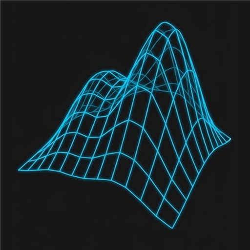

B-SPLINE GENERATOR
v1.1.0
↶
Undo
↷
Redo
💾
Save…
📄
New
📁
Projects
🧩
Add-in
STEP
⚙️
Settings
SURFACE INSPECTOR
TOP:
0.000
"
BOT:
0.000
"
THK:
0.000
"
⚠ BIT BELOW STOCK
Settings
close
Fusion design
Clear Fusion design
Removes what the add-in built (B-spline, artwork sketches, frame). Your own work stays.
Log for Claude
Save log (.json)
Your last actions + the drawing now: saved as a .json file (also copied). Attach or paste it in the chat.
Undo Limit
Haptic feedback
Thicken Analysis
Offset below target to trigger Yellow warning
Keyboard Shortcuts
Node Edit (A)
A
Select tool (V)
V
Pen tool (F)
F
Version
v1.1.0
Export Terrain STEP
close
Clean Surface
Basic noise surface (surface only)
Clean Solid
Thickened body representation
Stamped Surface
Single surface with projected stencils
Stamped Solid
Full thickened body with projected stencils
Include SVG Sketch
Send the artwork as an editable 2D Fusion sketch (in addition to the carved 3D body)
Frame
Artwork
Photo
Brick
Download SVG
Clear
⋮
Cancel
Apply
Stroke
−
+
Color
▾
Grid
SHOW
GRID
GEOM
AUTO NODES
Style
STROKE
FILL
BOTH
Font
−
+
Symbols
Detail
−
+
EXPAND
UN-EXPAND
⧉
⎘
⛶
✕
🔒
💡
Try EXPAND
Tap the
⤢
tool in the toolbar to offset/outline your paths for CNC carving.
Got it
Layers
Glyphs
✕
Symbol
Webdings
Wingdings
Segoe UI Symbol
📁
PROJECTS
grid_view
Tiles
view_list
List
✕
📁
create_new_folder
New Folder
note_add
New
save_as
Save As…
save
Save…
hourglass_empty
Loading...
No selection
📁
Load
edit
Rename
delete
Delete
--